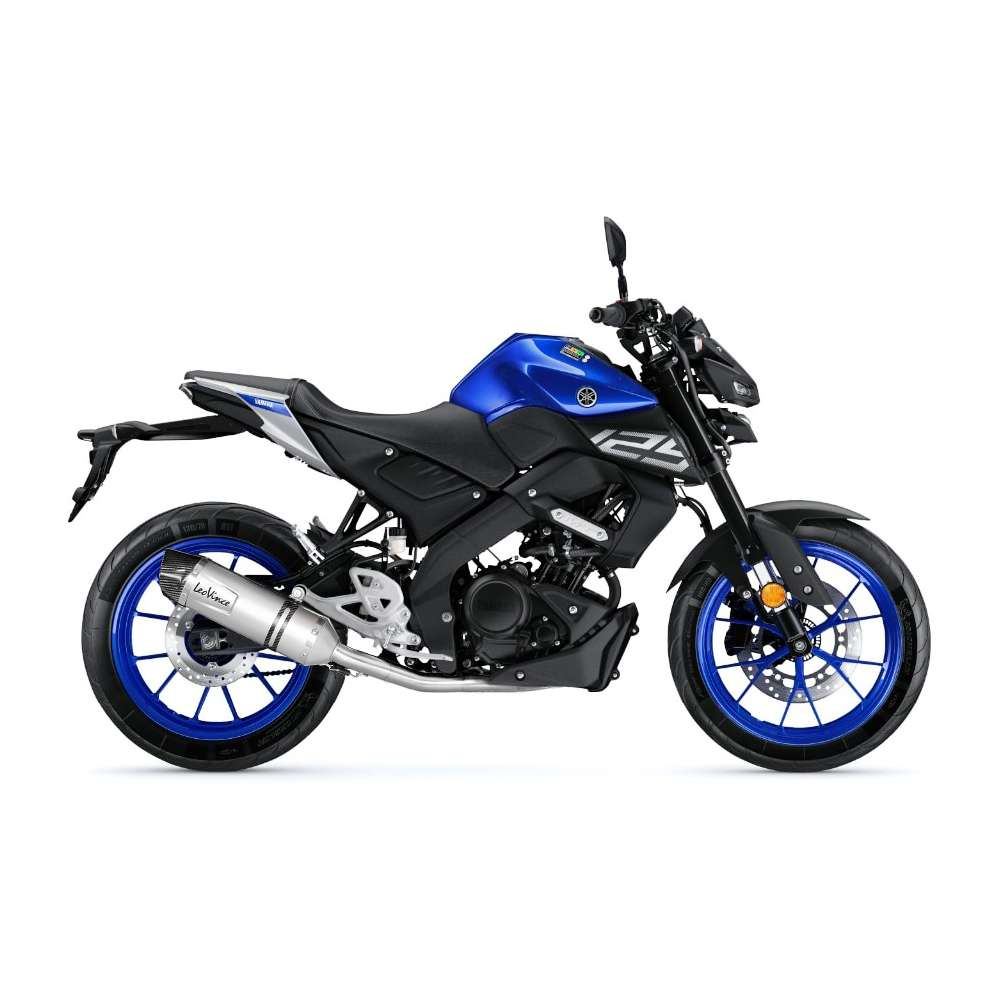
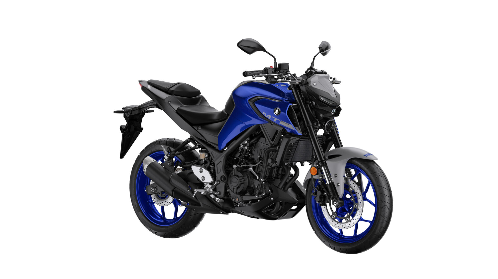
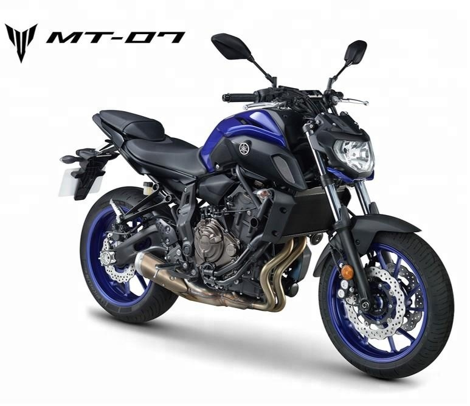

Yamaha MT125
- Silindir Hacmi 124.7 cc.
- Silindir Adedi 1.
- Subap Adedi 4.
- Beygir Gücü (bg) 15.0.
- Azami Tork 12.4 nm.
- Azami Devir 9000 d/d.

Yamaha MT25
- Silindir Hacmi 249 cc.
- Silindir Adedi 2.
- Subap Adedi 4.
- Beygir Gücü (bg) 36.
- Azami Tork 26.6 nm.
- Azami Devir 12000 d/d.

Yamaha MT07
- Silindir Hacmi 689 cc.
- Silindir Adedi 2.
- Subap Adedi 4.
- Beygir Gücü (bg) 74.8
- Azami Tork 68.0 nm.
- Azami Devir 9000 d/d.